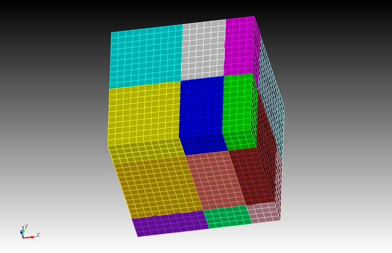
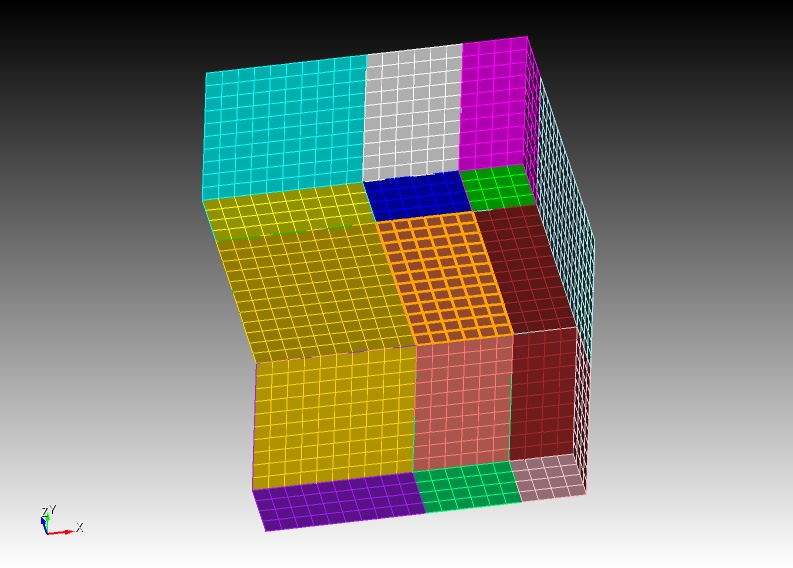
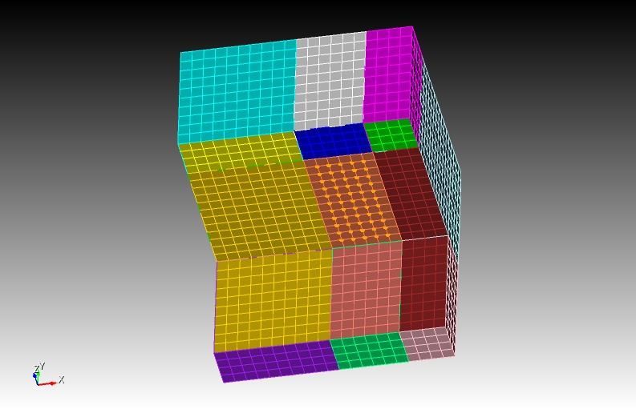

Table of Contents
Kinematic and dynamic fault sources
SPECFEM3D can handle finite fault sources of two kinds:
-
Kinematic: the spatio-temporal distribution of slip rate is prescribed along the fault surface
-
Dynamic: a friction law and initial stresses are prescribed on the fault, a spontaneous rupture process is computed.
Mesh Generation with Split Nodes
Faults need to be handled in a special way during mesh generation. A fault surface must lie at the interface between elements (the mesh must honor the fault surfaces). Moreover, a fault is made of two surfaces in contact. Each of these two surfaces needs a separate set of nodes. This approach is known as split nodes. Currently faults can only be run with xdecompose_mesh and CUBIT. xmeshfem3D is not yet ready to handle faults.
To facilitate the mesh generation with split nodes in CUBIT, we need to separate the two fault surfaces by a small distance, effectively creating a tiny opening of the fault (Figure [fig:examples.splitnodes], [fig:examples.splitnodes-surfacetrace]). Note that the opening distance should not be too small especially in single precision simulations (For example, if your fault is at (y=y_0) plane, then the opening distance should be at least (10^{-6}y_0) since single precision can ensure precision within only 7 digits). Note that only the interior of the fault must be opened, its edges must remain closed (except the edge on the free surface). The fault is automatically closed later by SPECFEM3D.
Here is an example CUBIT script to generate a mesh with split nodes for a buried vertical strike-slip fault:
reset
brick x 10 y 10 z 10
webcut volume all with plane xplane
webcut volume all with plane yplane
webcut volume all with plane xplane offset 3
webcut volume all with plane zplane offset 3
webcut volume all with plane zplane offset -3
imprint all
merge all
unmerge surf 160
mesh vol all
set node constraint off
node in surf 168 move X 0 Y 0.01 Z 0
node in surf 160 move X 0 Y -0.01 Z 0

 <div class="figcaption" style="text-align:justify;font-size:80%">Figure: Screenshots of the CUBIT example for the embedded fault with split nodes: The entire mesh is decomposed into several volumes bounding the fault (top), the fault surface 168 is shown as orange squares (middle) and split nodes of the fault shown as orange dots(bottom). Note that only interior nodes of the fault are split while those on the edges of the fault surface are touching each other.</div> 
The CUBIT scripts (*.jou and *.py) in the directory EXAMPLES generate more complicated meshes. The *.py files are Python scripts that execute CUBIT commands and use the CUBIT-python interface for SPECFEM3D (see next section). The Python language allows to define and manipulate variables to parameterize the mesh. Alternatively, the Python script can call a CUBIT journal file (*.jou), which looks like the example above. Variables can be defined and manipulated there using the (\mathtt{APREPRO}) language built in CUBIT.
Note that you should avoid gaps in the list of indices of mesh objects with the following CUBIT command:
compress ids hex face edge node
(otherwise you will get a segmentation fault during domain decomposition)
CUBIT-Python Scripts for Faults
The mesh generated in CUBIT needs to be processed and exported in a format compatible with SPECFEM3D. This is achieved in the Python scripts by calling the Python-CUBIT interface functions defined in the CUBIT directory:
-
Function (\mathtt{define_bc}) (or (\mathtt{boundary_definition.py})) must be called to set up the absorbing boundaries database
-
Function (\mathtt{fault_input}) must be called once for each fault to set up the fault database
-
Function (\mathtt{cubit2specfem3d.export2SPECFEM3D}) must be called at the very end of the script to export the mesh in a SPECFEM3D format.
The functions in #1 and #3 are for the bulk and are documented in Section [subsec:Exporting-the-Mesh]. We focus here on #2:
Function:
(\mathtt{fault_input})
Purpose:
export a fault mesh database from CUBIT to a SPECFEM3D-compliant file
Syntax:
fault_input(id_fault, ids_surf_1, ids_surf_2)
Inputs:
-
id_fault integer index assigned to the fault. (The user must number all the faults, starting at 1, with unit increments)
-
ids_surf_1 list of CUBIT ids of all surfaces that form side 1 of the fault.
-
ids_surf_2 list of CUBIT ids of all surfaces that form side 2 of the fault. (The user must decide which side of the fault is side 1. This choice affects the sign conventions of fault quantities as explained in Section [sec:Sign-Convention-for]).
Outputs:
file (\mathtt{fault_file_X.dat}), where X is the fault id (id_fault).
Example:
For the example in Section [sec:Mesh-Generation-with]:
A1 = [168]
A2 = [160]
fault_input(1,A1,A2)
Examples
The package includes examples, the SCEC benchmark problems:
-
TPV5, a planar vertical strike-slip fault
-
TPV14 and TPV15, vertical strike-slip fault system with a fault branch
-
TPV102 and TPV103, rate-and-state benchmarks
-
TPV22 and TPV23, step-over benchmarks
-
TPV16, heterogenous initial stress
and
- Splay fault models from Wendt et al. (2009)
Read the documents in the directory EXAMPLES/*/description. They contain a description of the example and additional instructions to run it. Visualize the results with the Matlab scripts in the directory (\mathtt{EXAMPLES/*/post})
Sign Convention for Fault Quantities
During mesh generation, the fault is defined by two surfaces in contact. Let’s denote as side 1 the SECOND surface declared by the user in the call to the python function fault_input, and the FIRST surface as side 2. The local coordinate system on the fault is defined as the right-handed coordinate system defined by (strike, dip, normal), where normal is the normal vector outgoing from side 1, dip is parallel to the along-dip direction pointing downwards, and strike is the horizontal along-strike vector such that the system is right-handed. In places where the fault plane is horizontal, we define the alone strike direction to be (1,0,0).
Slip is defined as displacement on side 2 minus displacement on side 1. In the local coordinate system on the fault, positive along-strike slip is right-lateral and positive along-dip slip is thrust if side 1 is on the hanging wall (normal faulting if side 1 is on the foot wall).
Traction is defined as the stress induced on side 1 by side 2, which is the stress tensor times the normal vector outgoing from side 1. In the local coordinate system on the fault, the normal traction is negative in compression, positive along-strike traction generates right-lateral slip and positive along-dip traction generates thrust slip if side 1 is on the hanging wall (normal faulting if side 1 is on the foot wall).
Input Files
Three additional input files are required in the DATA/ directory for dynamic and kinematic faults. They are (\mathtt{Par_file_faults}), (\mathtt{FAULT_STATIONS}) and (\mathtt{input_file.txt}) or (\mathtt{rsf_hete_input_file.txt})(optional). If the former does not exist, the code assumes that there are no faults.
00.00.0000
contains parameters of the fault. The first part of this file has a strict format:
Line
1: Number of faults (NF)
Lines
2 to NF+1: Kelvin Voigt damping (in seconds) for each fault. (See below how to set this parameter)
Line
NF+2: Type of simulation (1=dynamic , 2 = kinematic)
Line
NF+3: Number of time steps between updates of the time series outputs at selected fault points (see DATA/FAULT_STATIONS), usually a large number (100s or 1000s). Note that the sampling rate of the time series is usually much higher.
Line
NF+4: Number of time steps between fault snapshot outputs (quantities at every fault point exported at regular times), usually a large number (100s or 1000s).
Line
NF+5: Slip velocity threshold below which frictional healing is set (friction coefficient is reset to its static value). If this value is negative healing is disabled.
Line
NF+6: Slip velocity threshold to define the rupture front. Only used for outputs.
The rest of this file is made of namelist input blocks (see namelist in a Fortran 9x manual). The input for each fault has the following sequence (arguments in [brackets] are optional):
&RUPTURE_SWITCHES / RATE_AND_STATE ,TPV16 ,HETE_RSF ,TPV10X ,TWF
&BEGIN_FAULT /
&STRESS_TENSOR Sigma = (\sigma_{xx}),(\sigma_{yy}),(\sigma_{zz}),(\sigma_{xy}),(\sigma_{xz}),(\sigma_{yz}) /
&INIT_STRESS S1, S2, S3 [,n1, n2, n3] /
followed by (n1+n2+n3) &DIST2D blocks
&SWF mus, mud, dc [, nmus, nmud, ndc] /
&TWF nuc_x, nuc_y, nuc_z, nuc_r, nuc_t0, nuc_v /
&RSF V0,f0,a,b,L,V_init,theta_init,C,StateLaw [ nV0,nf0,na,nb,nL,nV_init,ntheta_init,nC ] /
followed by (nV0+nf0+na+nb+nL+nV_init+ntheta_init+nC) &DIST2D blocks
00.00.0000
input block sets some switches in the simulation process.
RATE_AND_STATE
= .TRUE. use rate and state friction,=.FALSE. use slip weakening friction
TPV16
=.TRUE turn on heterogeneity fault property input for slip weakening friction from DATAinput_file.txt, =.FALSE. turn off such feature
HETE_RSF
=.TRUE. turn on heterogeneity fault property input for rate and state friction using input from DATArsf_hete_input_filr.txt, =.FALSE. turn off such feature
TPV10X
=.TRUE. turn on some ad hoc features for TPV101-104 simulations, a rate strengthening layer surrounding the rate weakening region. =.FALSE. turn off such feature
TWF
=.TRUE. turn on time-weakening nucleation. This function is activated only when RATE_AND_STATE=.FALSE. and TWF=.TRUE.
input block sets the initial fault stresses by projecting a uniform regional stress field onto the fault plane.So that the tractions (\tau = \sigma : n) while (n) is the local norm of the fault plane. Sigma = (\sigma_{xx}),(\sigma_{yy}),(\sigma_{zz}),(\sigma_{xy}),(\sigma_{xz}),(\sigma_{yz}) (in Pa)
input block sets the initial fault stresses relative to the foot-wall side of the fault. Initial stresses are composed of a constant background value possibly overwritten in prescribed regions by heterogeneous distributions (see &DIST2D blocks below):
S1
= constant background value of along-strike shear stress (positive in the usual strike direction)
S2
= constant background value of along-dip shear (positive is down-dip, normal faulting)
S3
= constant background value of normal stress (negative in compression)
n1
= number of heterogeneous items for along-strike shear stress [default is 0]
n2
= number of heterogeneous items for along-dip shear stress [default is 0]
n3
= number of heterogeneous items for normal stress [default is 0]
input block sets the slip-weakening friction parameters of the fault:
mus
= constant background value of static friction coefficient
mud
= constant background value of dynamic friction coefficient
dc
= constant background value of critical slip-weakening distance
C
= constant background value of cohesion (in Pa)
nmus
= number of heterogeneous items for static friction coefficient [default is 0]
nmud
= number of heterogeneous items for dynamic friction coefficient [default is 0]
ndc
= number of heterogeneous items for critical slip-weakening distance [default is 0]
nC
= number of heterogeneous items for cohesion
input block sets the time-weakening friction parameters of the fault:
nuc_x
= x coordinate of the hypocenter (in m)
nuc_y
= y coordinate of the hypocenter (in m)
nuc_z
= z coordinate of the hypocenter (in m)
nuc_r
= the radius of time-weakening nucleation (in m)
nuc_t0
= the cohesive time. The friction linearly decreases from static friction to dynamic friction during this time (in s)
nuc_v
= the time-weakening nucleation speed (in m/s)
input block sets the rate and state friction parameters of the fault:
We refer to the well known rate and state friction formula: [\mu = f_0 + a* log(\frac{v}{v_0}) + b* log(\frac{v_0}{\theta L}))]
V0
= constant background value of (V_0)
f0
= constant background value of (f_0)
a
= constant background value of (a)
b
= constant background value of (b)
L
= constant background value of (L)
V_init
= constant background value of along strike right lateral slip rate at time 0
theta_init
= constant background value of state variable (\theta) at time 0
C
= constant background value of cohesion (in Pa)
StateLaw
= 1 or 2. 1 for aging law , 2 for slip law with strong dynamic weakening.
n**
= number of heterogeneous items for quantity **
input blocks modify (overwrite) the value of a fault parameter by a heterogeneous spatial distribution:
&DIST2D shapeval=’(\mathtt{square})’, val, xc, yc, zc, l /
(\;)sets a constant value (val) within a cube with center (xc,yc,zc) and edge size l.
&DIST2D shapeval=’(\mathtt{rectangle})’, val, xc, yc, zc, lx, ly, lz /
(\;)sets a constant value (val) within a rectangular prism with center (xc,yc,zc) and edge sizes (lx,ly,lz).
&DIST2D shapeval=’(\mathtt{rectangle-taper})’, val, valh, xc, yc, zc, lx, ly, lz /
(\;)sets a vertical linear gradient within a rectangular prism with center (xc,yc,zc) and edge sizes (lx,ly,lz). Values vary linearly as a function of vertical position z between value val at z = zc-lz/2 and value valh at z = zc+lz/2 .
&DIST2D shapeval=’(\mathtt{circular})’, val, xc, yc, zc, r /
(\;)sets a constant value (val) within a sphere with center (xc,yc,zc) and radius r.
00.00.0000
Stations in the fault plane.
Line 1 : number of stations.
Line 2 to end: 5 columns: X, Y, Z (-depth), station name, fault-id
The fault-id identifies the fault that contains the station. It is the index of appearance in the faults list after line 2 of Par_file_faults
00.00.0000
Heterogeneous stresses and friction for linear slip weakening friction parameters are documented in page 10 of
00.00.0000
To activate this feature, in Par_file_faults name list &RUPTURE_SWITCHES, set TPV16=.TRUE..
00.00.0000
Heterogeneous stresses and friction input for rate and state friction. To activate this feature, in Par_file_faults name list &RUPTURE_SWITCHES, set RSF_HETE=.TRUE.. The format of DATA/rsf_hete_input_file.txt is as such, in the first line there are four integers that are sequentially documenting the number of divisions along strike, number of divisions along dip, cell size along strike , cell size along dip. Then the following N (N=NumberOfDivisionsAlongStrike * NumberOfDivisionsAlongDip) lines will document the stress and friction properties on the grid. There are a total of 13 columns.
-
Column1 = Along strike distance(m)
-
Column2 = Along dip distances(m) The distance should be negative for points at depth
-
Column3 = Normal stress(Pa)
-
Column4 = Horizontal right-lateral shear stress(Pa)
-
Column5 = Vertical up-dip shear stress(Pa)
-
Column6 = (V_0) value in RSF(m/s)
-
Column7 = (f_0) value in RSF
-
Column8 = a value in RSF
-
Column9 = b value in RSF
-
Column10 = L value in RSF
-
Column11 = Initial slip velocity(m/s)
-
Column12 = State variable (\theta)
-
Column13 = Cohesion(Pa)
Note that the input grid file do not have to coincide with the mesh. For each fault node on the mesh, they will use the value from the nearest node on the input grid.
Setting the Kelvin-Voigt Damping Parameter
The purpose of the Kelvin-Voigt viscosity in the dynamic fault solver is to damp spurious oscillations generated by the fault slip at frequencies that are too high to be resolved by the mesh. The viscosity (\mathtt{eta}) (in seconds) depends on the size of the elements on the fault. Here is how to set it:
-
Determine the average linear size of the elements on the fault plane, (\mathtt{h_fault}). Usually this value is prescribed by the user during mesh generation. Otherwise it can be found by inspection of the mesh inside the CUBIT GUI.
-
Use the Matlab function (\mathtt{utils/critical_timestep.m}) to compute (\mathtt{dtc_fault}=\mathtt{critical_timestep\left(c_{p},h_fault,ngll\right)}). This is the critical time step in an elastic medium for a hypothetical element of cubic shape with size equal to (\mathtt{h_fault}).
-
Set (\mathtt{eta}) in (\mathtt{Par_file_faults}) to (0.1 to 0.3)(\ensuremath{\times}\mathtt{dtc_fault}). A larger (\mathtt{eta}) damps high-frequencies more aggressively but it might also affect lower frequencies and rupture speed.
Viscosity reduces numerical stability: the critical timestep in a simulation with Kelvin-Voigt damping needs to be smaller than that in a purely elastic simulation. Here is how to set the time step accordingly:
-
Run a test simulation without viscosity ((\mathtt{eta})=0 and only a few time steps)
-
Look for the maximum suggested time step in
OUTPUT_FILES/output_mesher.txt. This is the critical timestep of a purely elastic simulation, (\mathtt{dtc_bulk}). -
Reset the timestep of the simulation with a Kelvin-Voigt material to a value smaller than (\mathtt{dtc_kv}=\mathtt{eta}\left(\sqrt{1+\mathtt{dtc_bulk^{2}}/\mathtt{eta^{2}}}-1\right))
Note that in general (\mathtt{dtc_bulk}) is smaller than (\mathtt{dtc_fault}), because elements off the fault might be smaller or more distorted than element faces on the fault.
Output Files
Several output files are saved in OUTPUT_FILES/:
-
Seismograms for each station on the fault plane given in
DATA/FAUL_STATIONS. One output file is generated for each station, named after the station. The files are ascii and start with a header (22 lines long) followed by a data block with the following format, one line per time sample:Column 1 = Time (s)
Column 2 = horizontal right-lateral slip (m)
Column 3 = horizontal right-lateral slip rate (m/s)
Column 4 = horizontal right-lateral shear stress (MPa)
Column 5 = vertical up-dip slip (m)
Column 6 = vertical up-dip slip rate (m/s)
Column 7 = vertical up-dip shear stress (MPa)
Column 8 = normal stress (MPa)
The stresses are relative to the footwall side of the fault (this convention controls their sign, but not their amplitude). Slip is defined as displacement of the hanging wall relative to the footwall.
-
Seismograms at stations in the bulk (out of the fault plane) given in
DATA/STATIONS. -
Rupture time files are named (\mathtt{Rupture_time_FAULT})-(\mathtt{id}). One file is generated for each fault. The files are ascii and start with a header (12 lines long) followed by a data block with the following format, one line per fault node:
Column 1 = horizontal coordinate, distance along strike (m)
Column 2 = vertical coordinate, distance down-dip (m)
Column 3 = rupture time (s)
-
Fault quantities (slip, slip rate, stresses, etc) at regular times are stored in binary data files called (\mathtt{Snapshot#it#.bin}), where #it# is the timestep number. These can be read in Matlab with the function (\mathtt{utils/FSEM3D_snapshot.m})
Post-processing and Visualization
Some Matlab functions for post-processing and visualization are included in directory (\mathtt{utils}). The functions are internally documented (see their matlab help).
FSEM3D_snapshot reads a fault data snapshot
The directories EXAMPLES/*/post contain additional Matlab scripts to generate figures specific to each example.
This documentation has been automatically generated by pandoc based on the User manual (LaTeX version) in folder doc/USER_MANUAL/ (Mar 10, 2020)